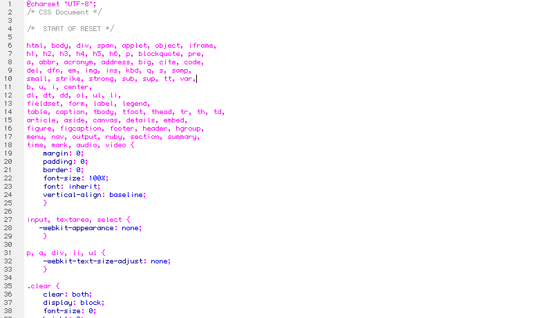
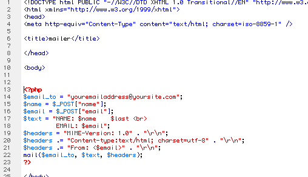
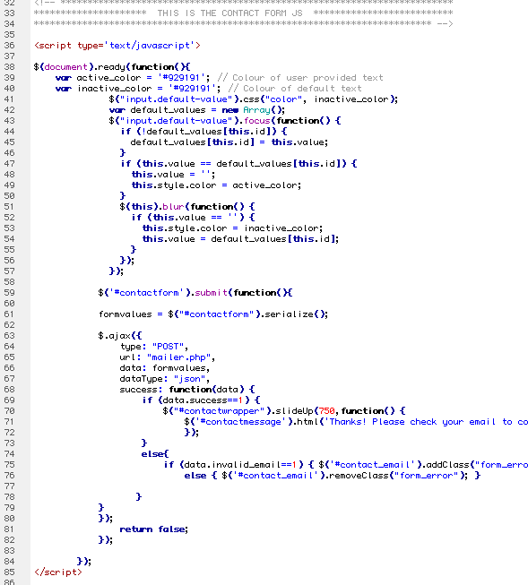
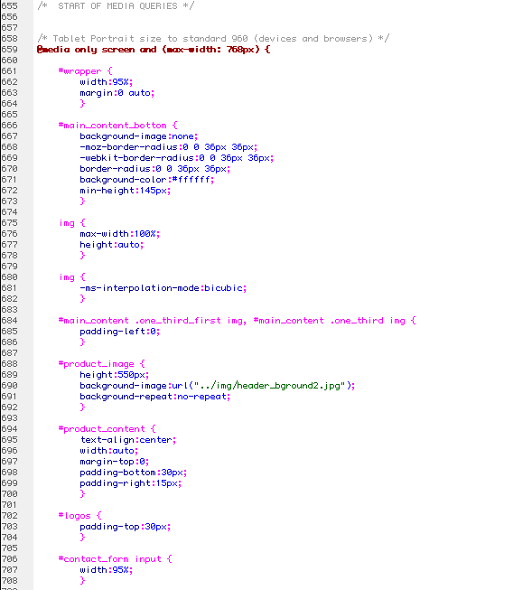

Created: 2/14/12
By: Jonathan Atkinson
Thank you for purchasing my template. If you have any questions that are beyond the scope of this help file, please feel free to email via my user page contact form here. Thanks so much!
Welcome to Nice App!
Welcome to 'Nice.app' a fully responsive application or service landing page.
Get higher conversions with this beautifully clean and minimalistic landing page design with super clear CTA (call to action) areas repeated down the page in strategic areas to fire visitors off to your selling page such as the android marketplace or the apple store. Also capture names and email addresses in the fully working php contact form with built in validation. Highly visible social icons for twitter and Facebook to assist with followers. 3 Large benefit areas highlight your products 3 main reasons for purchase.
The HTML is correctly coded and passed inspection at W3C Markup Validation Service - calls all javascript files and css files in each file where necessary. You should not have to change anything in the way these html files connect to their relevant css and js files as long as you upload everything in order..
All div's have been labeled to make alterations as easy as possible within the html and CSS files.
If you would like to edit the color, font, or style of any elements, you would edit the corresponding CSS style in the CSS file in the CSS folder:
p {
font-family:Helvetica, sans-serif;
font-size:12px;
color:#fae9e3;
line-height:1.4em;
}
Included in this template download is a single CSS directory / folder for the template - all necessary css files are included and shouldn't need any alterations unless you wish to customize anything.
The css file should be easy to follow and if using a modern html page editor you should be able to easily see the structure of each css file.

Included in this template download is a single JS directory / folder - all necessary JS file are included and shouldn't need any alterations unless you wish to customize anything. Here is a list and description for each one:
Please note that alterations to JS files could result in certain features not working - you should not attempt to alter javascript unless you are experienced - please use the web site references next to each JS file listed above for further details and help.
I've included the psd's (photoshop native files) with this theme:
The PSD files can be opened in Photoshop CS5 or earlier and contain well labelled layers and groups.
All layers are grouped so that elements from sections are contained in a group labelled for ease of finding something very quickly.
All layer effects (styles) are included on the layers so that full editing and personalization is fully available.
I've used the following graphical items / fonts that are free to use by their kind authors.
Included in the files is the PHP contact is a form mailer script - mailer.php - this file will need to be altered to have a fully functional contact form on your website. This contact form uses AJAX so there is no need for an error or thank you page - the results appear on the page dynamically - a missing field or incorrect formatted email address will result in no submission and dynamic field message - a successful form will result in the form disappearing and a Thank you message being displayed - Please see the section below named contact page for customization details.
It is very important that you alter the "To" field in this script to ensure the results are sent directly to your email of choice - luckily it's silly simple! Just open the mailer script and towards the top you will see the following:
mailer.php script editing

PLEASE NOTE: this script depends on the capabilities of your server setup - they use php5 and expect mail () function to be setup correctly - if you have issues, I can't help as it will be something to contact your hosting company about - some hosts do things a little weird and insist on you using their scripts, some say they have php setup correctly, when indeed they do not.

In the above screenshot you will see the "Thanks! Please check your email to confirm your subscription." text - this is our generic example text you can alter to your own - obviously this script does NOT send an email to the person subscribing to confirm, it just goes to you (if you altered the email address in the pHP as above) - normally you would plug the results in to a subscription service who would fire-off a follow up email for subscription confirmation - that bit is up to you to organize.
This landing page a specific media queries at the end fo the main.css that are particular for 768px, 480px and 320px. Should you wish to change any CSS for these specific screen sizes you can edit them here (as shown below):

Once again, thank you so much for purchasing this template. As I said at the beginning, I'd be glad to help you if you have any questions relating to this template. No guarantees, but I'll do my best to assist. If you have a more general question relating to the templates on ThemeForest, you might consider visiting the forums and asking your question in the "Item Discussion" section.
Jonathan Atkinson